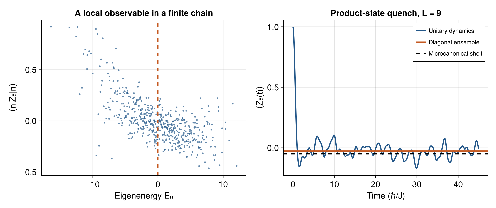

6 Quantum quenches and numerical tests of thermalization
A quantum quench prepares an out-of-equilibrium state without maintaining contact with a reservoir. One prepares a state using an initial Hamiltonian \(H_i\), changes a parameter rapidly, and evolves with a final Hamiltonian \(H_f\). The state is continuous across an ideal sudden quench; the Hamiltonian and its energy eigenbasis change. This clean separation makes quenches a direct test of the mechanism developed in Chapter 5.
6.1 What a quench fixes
Suppose \(\ket{\psi_0}\) is an eigenstate, ground state, or experimentally prepared state associated with \(H_i\). Immediately after the change,
\[ E_0=\bra{\psi_0}H_f\ket{\psi_0},\qquad \sigma_E^2=\bra{\psi_0}H_f^2\ket{\psi_0}-E_0^2, \qquad p_n=|\braket{n_f}{\psi_0}|^2. \tag{6.1}\]
Energy need not be conserved during the switch because an external agent changes the Hamiltonian. After the switch, the entire final-energy distribution \(p_n\) is constant. Unitary evolution changes relative phases. A finite switching time is a different protocol and must be modeled if it is not short compared with the relevant dynamical time scales.
For a local Hamiltonian \(H_f=\sum_jh_j\) and a product state or a state with rapidly decaying connected correlations,
\[ \sigma_E^2=\sum_{jk}\bigl(\langle h_jh_k\rangle -\langle h_j\rangle\langle h_k\rangle\bigr)=O(L). \tag{6.2}\]
The argument is that each \(j\) has only a bounded sum of appreciable connected correlations with other sites. It can fail for states with sufficiently long-range correlations. When it holds, the width in energy density vanishes even though exponentially many eigenstates can be occupied. This is the natural quench setting for diagonal ETH.
6.2 Three stationary predictions
For the final Hamiltonian, the diagonal prediction is
\[ A_{\mathrm{DE}}=\sum_np_nA_{nn}. \tag{6.3}\]
It retains the preparation and is exact as an infinite-time average when energies are nondegenerate. A microcanonical comparison uses
\[ A_{\mathrm{MC}}=\frac1{D_\Delta} \sum_{|E_n-E_0|<\Delta}A_{nn},\qquad D_\Delta=\#\{n:|E_n-E_0|<\Delta\}. \tag{6.4}\]
The symbol \(\Delta\) here denotes the half-width of the chosen window. A canonical prediction is
\[ A_{\mathrm{CE}}=\frac{\sum_ne^{-\beta E_n}A_{nn}}{\sum_ne^{-\beta E_n}}, \qquad \frac{\sum_nE_ne^{-\beta E_n}}{\sum_ne^{-\beta E_n}}=E_0. \tag{6.5}\]
The last equation defines the comparison temperature, rather than assuming the initial Hamiltonian’s temperature survives the quench. For bounded spectra, energies above the infinite-temperature mean can require negative \(\beta\). This is mathematically consistent because the partition sum remains finite. The existence of such states does not imply that all unbounded physical systems admit negative absolute temperature.
All three predictions must enforce the same exact charges. If the state has several symmetry-sector weights, use weighted sector ensembles or establish equivalence for the observables being compared. A canonical average over an unconstrained Hilbert space can fail for the elementary reason that it permits an incorrect particle number.
Even in a chaotic system, DE, MC, and CE are not identical at finite size. They sample different energy distributions. The curvature term in Equation 5.6 predicts part of this difference. Near a critical region, a spectral edge, or a small window containing only a few levels, finite-size differences can be substantial.
6.3 What to measure in an exact-diagonalization study
A transparent test begins with the complete Hamiltonian, boundary conditions, local-operator convention, and symmetry sector. Plot \(A_{nn}\) against energy density, and show the window occupied by the initial state. A smooth curve with decreasing scatter as size grows supports diagonal ETH. A single small-system plot is an illustration, not a thermodynamic-limit result.
Useful measurements include a root-mean-square deviation within a window, the largest deviation, neighboring-eigenstate differences, and binned off-diagonal variances as functions of mean energy and frequency. These answer different questions. The window must be narrow enough to remove smooth energy dependence and wide enough to contain many states. Subtracting a local smooth fit can help measure fluctuations, but the fitting procedure must be reported because overfitting can artificially suppress them.
For a quench, evaluate \(A(t)\) and compare its late-time average with \(A_{\mathrm{DE}}\) before using a thermal ensemble. Failure of the first comparison can reveal a time window too short for dephasing, numerical errors, or unresolved degeneracy. Agreement of DE with MC tests the thermal eigenstate mechanism for the occupied states. Agreement of MC with CE tests ensemble equivalence for the observable and system size.
The numerical work of [1] provided a direct lattice-system test connecting eigenstate expectation values to quench outcomes. Studies across integrability breaking, including [2], also show why spectral and eigenvector diagnostics should be examined together. These are results for specified model families and finite-size sequences, not blanket proofs for arbitrary interacting Hamiltonians.
6.4 A reproducible small-chain illustration
The numerical laboratory implements an open chain with \(L=9\) and
\[ H=-\sum_{j=1}^{L-1}Z_jZ_{j+1} -1.05\sum_{j=1}^LX_j -\sum_{j=1}^L(0.35+0.07j)Z_j. \tag{6.6}\]
Here \(X_j,Z_j\) are Pauli matrices, and \(\hbar=1\). The varying longitudinal field removes reflection symmetry and provides a concrete interacting real Hamiltonian. The observable is the central spin \(Z_5\). Among computational-basis product states with central spin \(+1\), the script chooses the one whose mean energy is nearest the spectral mean. Its subsequent motion is an exact unitary calculation for this finite chain.

Read this figure as a demonstration of the computation and of finite-size questions. To infer ETH scaling, repeat for several larger sizes with consistent energy-density windows and observables. To infer a relaxation law, specify the fitting interval and test its stability. No large-system conclusion follows from visually smooth behavior at \(L=9\).
6.5 Recurrences, times, and the order of limits
A finite isolated spectrum produces a quasiperiodic sum of phases. Arbitrarily close recurrences are possible; exact irreversible convergence of the full state cannot occur. Equilibration therefore means closeness of selected observables for most times, often after an initial transient, rather than convergence of every amplitude.
A finite-time average contains the exact kernel
\[ \frac1\tau\int_0^\tau e^{i\omega t}\,\mathrm dt =e^{i\omega\tau/2}\frac{\sin(\omega\tau/2)}{\omega\tau/2}. \tag{6.7}\]
Very small gaps have not dephased when \(\tau\ll1/|\omega|\). However, an observable may equilibrate much earlier than the inverse smallest many-body gap because its relevant matrix elements and preparation weights need not resolve that extreme gap. Local transport, quasiparticle lifetimes, and approximate charges can dominate the experimentally relevant time.
The limits \(L\to\infty\) and \(t\to\infty\) can lead to different questions. Taking the infinite-time average at fixed finite \(L\) gives DE. Taking a thermodynamic limit first can support smooth relaxation laws and continuous spectra. A finite numerical study should state which quantity it estimates and avoid treating its recurrence time as a material relaxation time.
6.6 Why integrable quenches differ
At integrability, additional charges constrain \(p_n\) beyond energy. Nearby eigenstates can have different local properties even when their energy densities agree. The diagonal ensemble can then relax to a value different from MC or CE. A generalized Gibbs ensemble is designed to keep the additional locally relevant constraints; later chapters construct it explicitly.
Several caveats remain. Some observables in integrable models can still show thermal-looking values for particular preparations. A large effective dimension can make temporal fluctuations small even when the stationary value is nonthermal. Conversely, an approximately conserved quantity in a weakly nonintegrable model can produce a long prethermal plateau before eventual drift. The criterion for thermalization is a comparison of stationary local predictions under specified constraints, not whether a curve becomes visually flat.
6.7 Exercises and worked answers
1. Exact energy width in the lab preparation. For any \(Z\)-product state in Equation 6.6, find \(\sigma_E^2\).
The \(ZZ\) and \(Z\) terms are diagonal in the preparation. Each transverse term flips a distinct spin, producing an orthogonal configuration with amplitude \(-1.05\). By Equation 4.5, \(\sigma_E^2=L(1.05)^2\). The mean energy depends on the chosen spin configuration, but this variance does not.
2. Solving for temperature. Why is the canonical mean energy a monotone function of \(\beta\), and when is the solution unique?
\(\partial_\beta\langle H\rangle_\beta=-\operatorname{Var}_\beta(H)\le0\). If more than one energy has nonzero thermal weight, the variance is positive and the function is strictly decreasing. For a finite nontrivial spectrum, any energy strictly between the lowest and highest levels has a unique finite \(\beta\) in the unrestricted sector; endpoints require limiting temperatures.
3. A finite-window bias. Why need the mean energy of a symmetric microcanonical window around \(E_0\) not equal \(E_0\)?
The density of states need not be symmetric. More levels may lie on one side of the center, shifting the equally weighted mean. This matters when comparing energy-dependent observables at finite width. Report both the chosen window and its actual mean energy, or reduce the width while retaining enough levels.